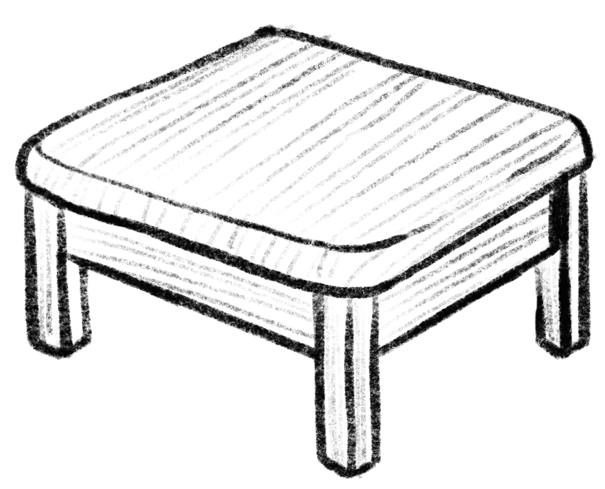

What is wood?
Wood is essentially made of secondary xylem, a type of tissue that arose from secondary growth. The secondary xylem is created by an outer ring of cells (vascular cambium) and its main function is to conduct water and minerals. Wood anatomy deals with the cells and tissue types that compose this secondary growth in woody plants. It is important to note that perennial plants are more likely to experience woody growth.
Why learn wood anatomy?
Wood anatomy allows scientists to classify plant species. This provides crucial information for various industries like the ones listed below:
Carpentry
Different types of wood require different methods of handling. Carpenters need to know how each wood acts for quality assurance.
Forestry
All plants interact with their environment differently. Knowing these differences allows for better forest maintenance.
Horticulture
In practices like grafting, different species may or may not be compatible with each other. Knowing which ones are and why can be essential.